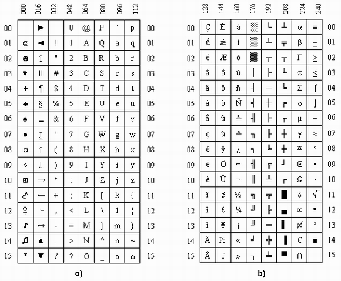
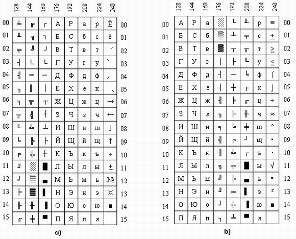

|
|
Варианты кодировки знакогенераторов ПК
Стандартный знакогенератор ПК IBM PC имеет кодировку символов, изображенную на рис.2.1. Символы с кодами от 0 до 127, образующие первую половину символов знакогенератора (рис.П2.1, а), построены по стандарту ASCII и одинаковы на всех IBM-совместимых ПК. Вторая половина символов (коды 128...255) могут отличаться на ПК разного типа. В стандартном знакогенераторе фирмы IBM символы псевдографики занимают три смежных колонки (коды 176...223, см. рис.П2.1, b). Колонки с кодами от 128 до 175 и от 224 до 239 используются для размещения некоторых символов национального алфавита различных европейских языков, а последняя колонка (коды 240...255) - для размещения специальных знаков. С учетом этого расположения символов разрабатывается подавляющее большинство программ зарубежного происхождения.

Рис.П2.1. Стандартная кодировка фирмы IBM: а) для кодов 0...127; b) для кодов 128...255
Стандартный отечественный знакогенератор строится по рекомендациям Международного консультационного комитета по телеграфии и телефонии (МККТТ). Расположение символов во второй половине таблицы этого знакогенератора (рис.П2.2,а) резко отличается от принятого фирмой IBM, что затрудняет использование зарубежного программного обеспечения на отечественных ПК. В связи с этим, стандартный (так называемый ГОСТовский) вариант кодировки часто заменяется альтернативным (рис.П2.2, b), главное достоинство которого - расположение символов псевдографики на тех же местах, что и в знакогенераторе IBM. Недостаток такого знакогенератора заключается в том, что символы кириллицы не образуют непрерывный массив. Вариант, показанный на рис.П2.2, b в настоящее время получил наибольшее распространение на отечественных ПК. Именно на него рассчитаны практически все программы отечественного производства. Он стал фактическим стандартом для зарубежных фирм, изготовляющих ПК для экспорта в нашу страну.

Рис.П2.2. Варианты кодировки для кодов 128...255: а) по рекомендациям МККТТ; b) наиболее популярный
|
|